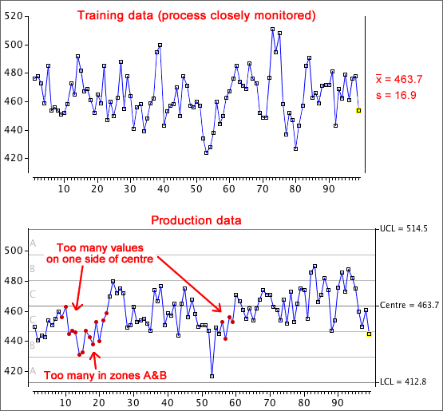

Obtaining control limits
It is important to evaluate control limits from the mean and standard deviation of values from the process when it is in control. The process should be monitored carefully (to avoid special causes) for this training period.
